Clan · The Isle Evrima
GARRA IBÉRICA – Spanish-Speaking The Isle Evrima Clan
A Spanish-speaking clan for playing The Isle Evrima together, with players from Spain and Latin America. We hunt, nest and survive as a pack, with Discord voice chat and a clan hunt every Saturday. Recruitment is open.
 Saturdays 22:00 clan hunt (Spain)
Saturdays 22:00 clan hunt (Spain) Voice with or without mic
Voice with or without mic Ranks earned by how you play
Ranks earned by how you play
The pack
About the clan
GARRA IBÉRICA (“Iberian Claw”) is a Spanish-speaking The Isle Evrima clan. The Isle is a dinosaur survival game for PC. We are not a game server: we are a community of players who organise on Discord to play together on an unofficial Evrima server.
We started out in Spain and play with people from all over Latin America. The clan language is Spanish, so you need to understand it to play with the pack. We love playing as a group: going out to hunt, defending nests, raising young and moving across the map like a real pack. There is room for carnivores and herbivores, for beginners and for players who have spent years on the island.
The clan is led by three Alphas of equal rank, with officers who review applications and leaders who guide groups in game.
Recruitment open
Looking for a clan in The Isle Evrima?
If you're looking for a Spanish-speaking The Isle clan so you can stop playing solo, this is the place. On the island, running as a pack changes everything: you take down prey you could never hunt alone, protect your nest and grow with someone watching your back.
At GARRA IBÉRICA we look for consistent players and good teammates rather than experts. If you've just started in Evrima, the clan's veterans will teach you; if you've been playing a while, you get a regular group, voice chat and a hunt every week.
- New players who want to learn in a group
- Veterans looking for a stable pack
- Carnivore and herbivore mains
- Players from Spain and Latin America
- Anyone who plays without a mic: a bot reads the chat aloud
- People who want to play without toxicity and with clear rules
Inside the clan
What we offer

An organised pack
We play as a group, with a leader who coordinates hunting, defence and travel.
Weekly hunt
Every Saturday at 22:00 (Spain) we all head out together. You can ask Discord to remind you.
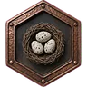
Nests and young
We take turns defending nests and raising the clan's young.
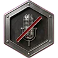
Voice, even without a mic
Voice channels to hunt and chat. No mic? Type in the voice chat and a bot reads it aloud.
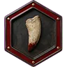
Dino guides
One guide per species with recommended mutations, so nobody starts blind.
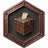
Your voice counts
Suggest ideas for the clan and vote on staff proposals with reactions.
Clips and screenshots
A channel to share the best hunts, escapes and moments on the island.
Meaningful ranks
You rise by how you play and how you treat the pack, not by asking.
How to join the clan
Three steps, all inside our Discord. The server is in Spanish.
Read the rules
They are in the #normas channel. Being on the server means you accept them, so read them first.
Fill in the application
In the #solicitudes channel, choose Solicitud de ingreso from the menu. The bot will ask you a few questions by direct message, so keep your DMs open.
Wait for review
The staff reviews your application. If accepted, you get the Recluta (Recruit) rank and the clan and voice channels open up.
No mic? No problem: join a voice channel and type in its chat. The bot joins by itself and reads it aloud, naming the speaker first. Use /set nick to choose what it calls you.

Weekly clan hunt: Saturdays at 22:00
Every Saturday at 22:00 Spanish mainland time (21:00 in the UK) the clan goes hunting together. We meet in the hunt voice channel, form a pack and a leader sets the course.
In Latin America it falls between 13:00 and 18:00, depending on the country and the time of year. It is the best moment to meet everyone, learn to move as a group and earn your place in the pack.
Next hunt
How to sign up
On Discord, open the Cacería del clan event and press “Interested”; Discord will remind you before it starts.
You need at least the Recluta (Recruit) rank to join the clan voice channels.
Add it to your calendar and it will remind you every week, in your own time zone.
Clan rules, in short
The full rules are in the #normas channel on Discord. These are the essentials.
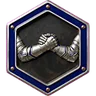
Respect- Respect above all: no insults, racism, harassment or toxicity, on Discord or in game.
- No NSFW, gore or spam, and no advertising other servers without staff permission.
- Never share anyone's personal data.
- Problems between members are settled in private or with the staff.
In game
- No hacks, exploits or bug abuse to gain an advantage.
- Never betray the pack: no attacking clan members or allies.
- Clan nests, routes and plans stay inside the Discord.
- In a group, follow whoever is leading the session.
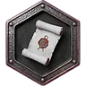
Entry and sanctions- Every new member starts as a Recruit, on probation.
- Sanctions go step by step: warning, temporary mute, removal from the clan and Discord ban.
- Depending on severity, staff may skip steps, and breaking the rules can also cost you your rank.
Clan ranks
Rank comes with time, but above all from how you play and how you behave with the pack. Time is only a minimum: promotions are decided by the staff, so don't ask for them.
High command
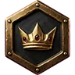
Alfa (Alpha)
The clan's three leaders, of equal rank. They have the final say.
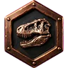
Beta
Officers: they accept applications, moderate and propose promotions. By invitation only.
Middle command
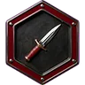
Líder de Escuadra (Squad Leader)
Leads groups in game: hunting, defending nests and moving across the map. Chosen by Alphas and Betas.
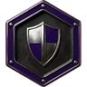
Veterano (Veteran)
A trusted member who guides recruits. After ~1 month as a Member, if you are consistent and a good teammate.
Rank and file
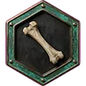
Miembro (Member)
Part of the pack. After one or two active weeks as a Recruit, following the rules and playing in a group.
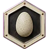
Recluta (Recruit)
Probation period when you join the clan.
Friendly clans
Aliado (Ally)
Members of friendly clans. Not part of the pack, but treated as such in game.
FAQ
Frequently asked questions
Is GARRA IBÉRICA a server for The Isle?
No. We are a clan: a community of players who organise on Discord to play The Isle Evrima together on an unofficial server.
Do I need to speak Spanish?
Yes. The clan language is Spanish, so you need to understand it to play with the pack. You don't need perfect Spanish.
What is The Isle Evrima?
The Isle is a survival game for PC, on Steam, where you play as a carnivore or herbivore dinosaur. Evrima is its current version and Legacy the old one. The clan plays Evrima.
How do I join the clan?
Join our Discord, read the rules, fill in the application from the bot menu and wait for the staff to review it. If accepted, you start as a Recruit. The three steps are explained above.
Are you recruiting new players?
Yes, recruitment is open. We look for consistent players and good teammates; experience comes from playing with the pack.
Can I join from Latin America?
Yes. The clan started in Spain, but it is open to any Spanish-speaking player, wherever they play from.
Does it cost anything to join?
No. Joining the clan and the Discord is free. You only need to own The Isle on Steam.
Do I need a microphone?
No. You can type in the voice channel chat and a bot reads it out loud, naming the speaker first.
Can I play as both a carnivore and a herbivore?
Yes. The clan has players of both types, and on Discord we have a guide for each dinosaur with recommended mutations.
When is the clan hunt?
Every Saturday at 22:00 Spanish mainland time (21:00 in the UK), in the hunt voice channel. In Latin America it falls between 13:00 and 18:00, depending on the country and the time of year. Press “Interested” on the Discord event and Discord will remind you.
How do I rank up?
By playing. Time counts, but above all how you play and how you treat the pack. Promotions are decided by the staff, so don't ask for them. See the ranks summary.
I'm new to The Isle. Can I join?
Yes. The clan's veterans help and guide recruits, and you learn much faster in a group.
Ready to join the pack?
Join the Discord, read the rules and send your application. See you on the island.
Join GARRA IBÉRICA on Discord (opens in a new tab)